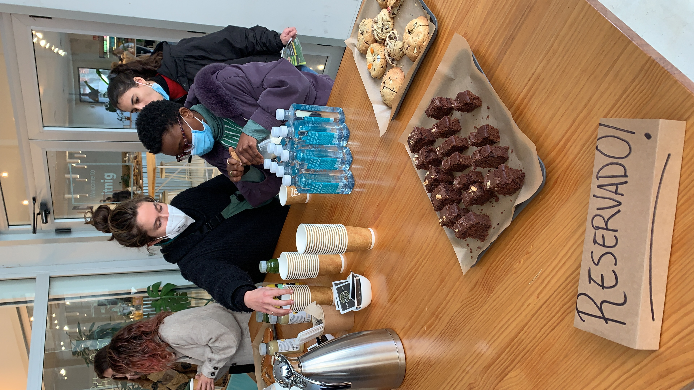
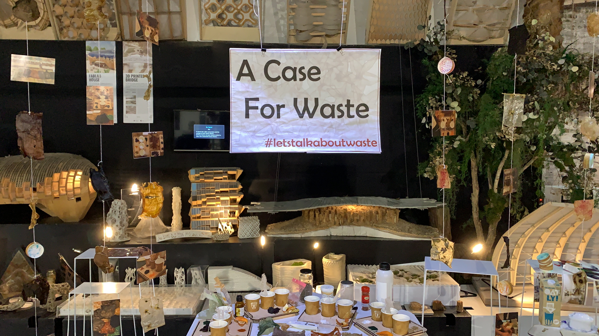
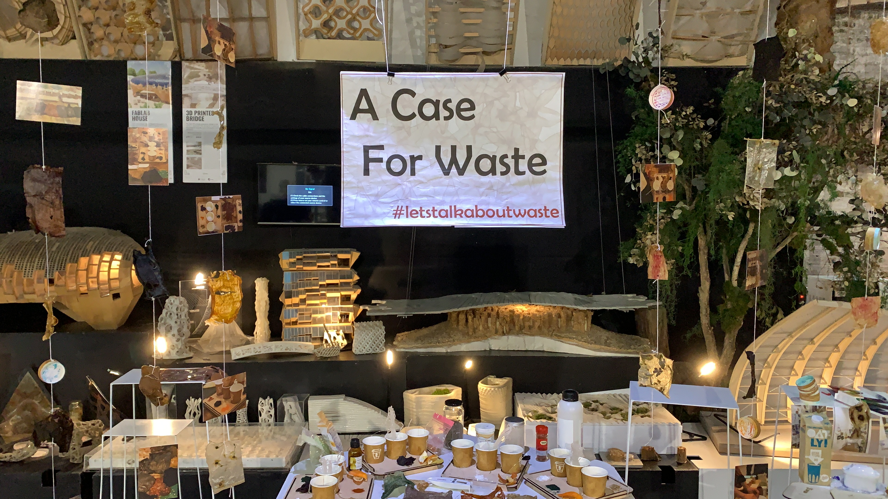
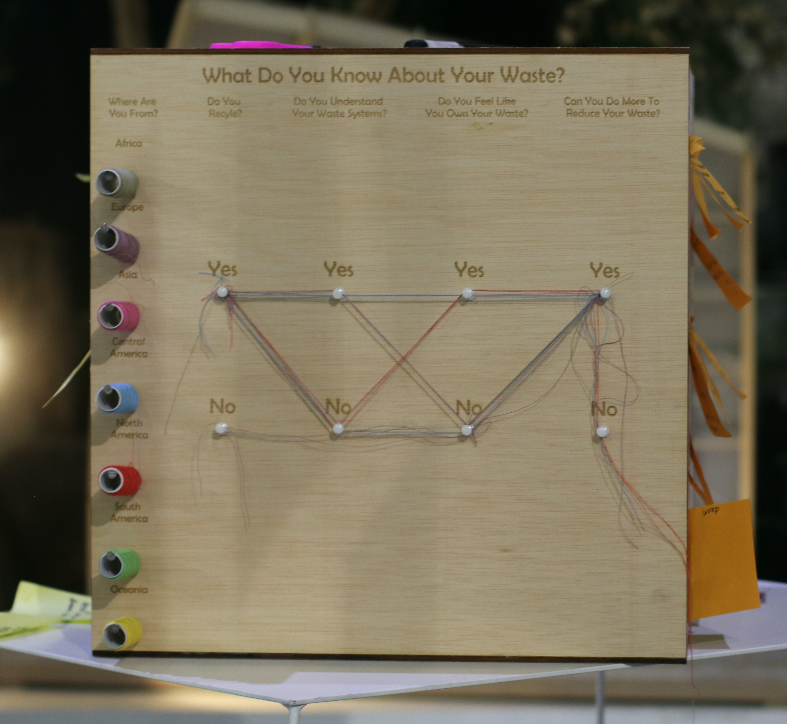
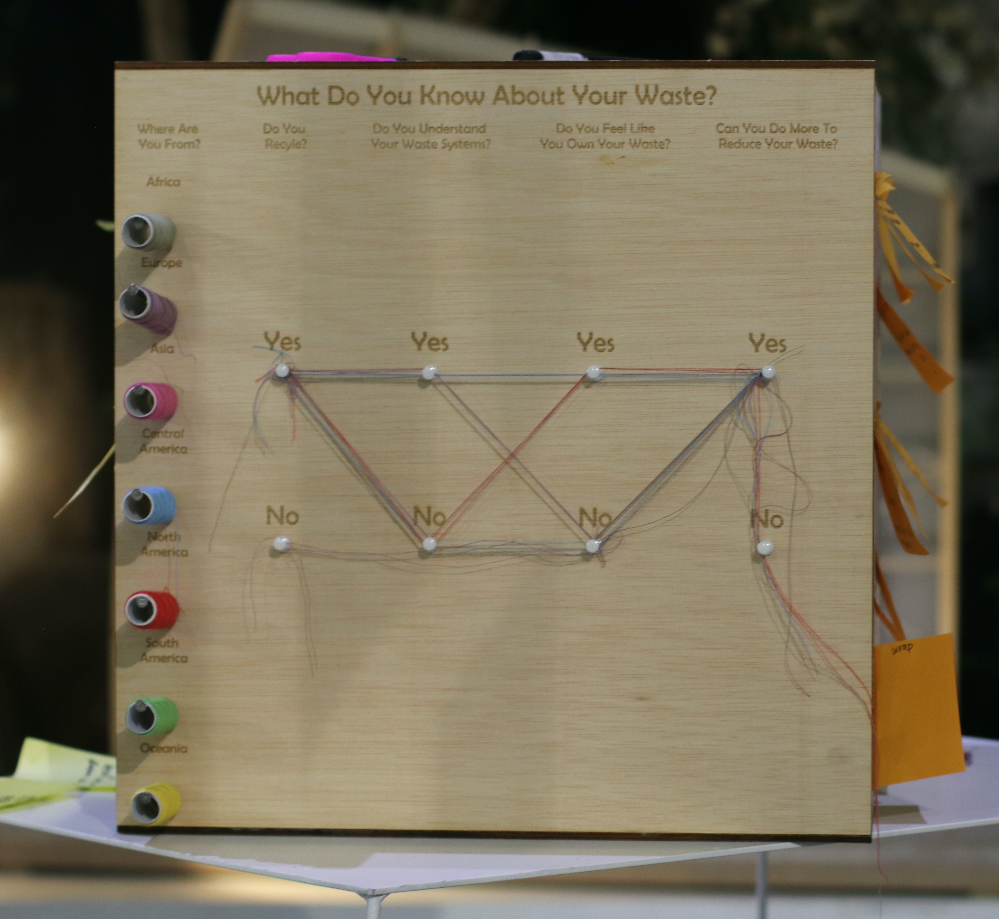

Once we were happy with the way it looked, we began gluing and tying knots to each component. Then, we set up the tables with the biomaterials, recipes, ingredients and participants’ boards. We also added some lights to create a warm ambience. Above the table went the garland we created, along with our group’s posters. Each of us also set up our personal area, with our own projects, photos and computers on display. On the right side of our table, we also set up our feedback box, where we would ask participants to engage with the questions on each side. Lastly, we hung up our updated fight posters on the string going from one side of the room to the other.
The day flew by very quickly. By 19.30, we had set everything up and were ready to go home.

Tuesday was when the Design Dialogues finally came. It was very rewarding to see each group in front of their own stand, displaying the collective effort they put over the past few weeks, along with everybody’s videos being projected on the big screen in the back of the room.
After making some final touch ups to our area, we defined who would be the host and who would be the viewers for the first hour and a half of the Design Dialogues. I volunteered to present our work first, while Marina and Pippa made their way around the rest of the class’ areas.
I got the opportunity to speak to a lot of people who were curious about our work. Although it was repetitive to talk about the same design intervention over and over again, I tried to make each discussion as unique as possible. I wanted to cater the chat to each person individually as much as I could, that way it would be more interesting not only for me but also the participant. I tried to offer both our collective projects’ goals, work and conclusions but also inserted my own views and plans on the topics.



 


 
